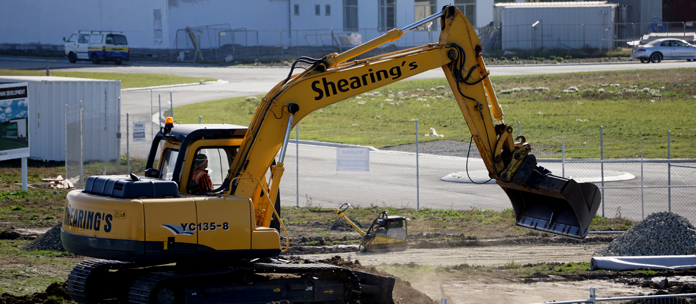
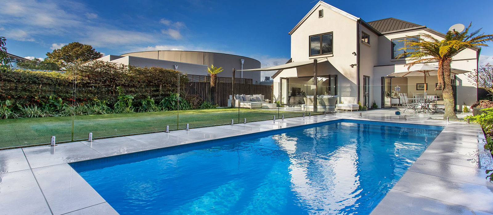

Shearing's · The Canterbury Contractors
Christchurch contractors for earthmoving, driveways & swimming pools
RA Shearing are the market leaders in driveways, earthmoving, drainlaying and swimming pools, and have been Christchurch contractors for over 40 years.
About Shearing's
Welcome to Shearing's, Christchurch contractors for over 40 years
RA Shearing Contractors Limited are Christchurch contractors and market leaders in driveways, earthmoving, drainlaying and swimming pools.
We're based at 210 Main South Road in Sockburn and work on residential and commercial projects across Christchurch and Canterbury. That can mean excavation and civil works, a new asphalt or concrete driveway, or a new swimming pool for your home. Shearing's have the machinery and experience to do the job well.
“Shearing's have been building swimming pools in Canterbury for over forty years with hundreds of satisfied customers.”
Shearing's at a glance
- Based in
- Sockburn, Christchurch
- Serving
- Christchurch and Canterbury
- Machinery
- Excavators from 1.8 to 12 tonne, loaders, rollers, trucks and trailers
- Pools
- Canterbury area agents for Mayfair Swimming Pools
- Pool supplies
- Shearings Pool Shop online store
-
Earthmoving & Civil
With a full range of excavators, loaders and trucks, Shearing's are well placed for any earthmoving works required.
Earthmoving & civil works -
Driveways & Paving
Shearing's are the market leaders in driveway and paving construction for both the residential and commercial markets.
Driveway finishes -
Swimming Pools
The biggest range of pools in Christchurch, any size, any shape. Canterbury area agents for Mayfair Swimming Pools.
Swimming pools
Earthmoving & Civil
Shearing's for Earthmoving and Civil
With a full range of excavators from 1.8 tonne to 12 tonne, plus loaders, rollers, trucks and trailers, Shearing's are well placed for all your Christchurch earthmoving and civil works.
- Excavators from 1.8 tonne to 12 tonne
- Loaders and rollers
- Trucks and trailers
- Drainlaying
Driveways & Paving
Shearing's for Driveways and Paving
Shearing's are the market leaders in driveway and paving construction for both residential and commercial markets.
We specialise in all driveway and paving finishes, from hard-wearing asphalt to decorative concrete.
Residential
New driveways and paving for Christchurch homes.
Commercial
Driveway and paving construction for commercial sites.
Finishes we specialise in
- Asphalt
- Plain concrete
- Textured concrete
- Coloured concrete
- Stamped concrete
- Exposed aggregate concrete

Swimming Pools
Shearing's for Swimming Pools
Shearing's have been building swimming pools in Canterbury for over forty years, with hundreds of satisfied customers. We have the biggest range of pools in Christchurch, in any size and any shape.
Mayfair Swimming Pools
Shearing's are proud to be the Canterbury area agents for the very popular free-form Mayfair Swimming Pools.
Shearings Pool Shop
Need swimming pool supplies? Check out our new online store, Shearings Pool Shop.
Good to know
Questions customers ask
What earthmoving machinery does Shearing's have?
A full range of excavators from 1.8 tonne to 12 tonne, plus loaders, rollers, trucks and trailers. That covers most earthmoving and civil works in Christchurch.
Which driveway finishes can you lay?
We specialise in all finishes: asphalt, plain concrete, textured concrete, coloured concrete, stamped concrete and exposed aggregate concrete. We do residential and commercial work.
Who builds swimming pools in Christchurch?
Shearing's have been building swimming pools in Canterbury for over forty years and offer the biggest range of pools in Christchurch, in any size and any shape.
Are you agents for Mayfair Swimming Pools?
Yes. Shearing's are proud to be the Canterbury area agents for the very popular free-form Mayfair Swimming Pools.
Do you do drainlaying?
Yes. As well as driveways, earthmoving and swimming pools, RA Shearing are market leaders in drainlaying in Christchurch.
Where is Shearing's based?
We're at 210 Main South Road, Sockburn, Christchurch. Phone 03 348 5420 or email info@shearings.co.nz.
More than moving earth
Planning earthworks, a driveway or a pool?
Talk to the Christchurch contractors who have been doing it for over 40 years. Give us a call or send us an email.
Contact Us
Contact Shearing's in Christchurch
-
Phone
-
Address
RA Shearing Contractors Limited
210 Main South Road, Sockburn, Christchurch -
Postal address
PO Box 16291, Hornby, Christchurch 8441
-
Opening hours
Our opening hours aren't listed here. Please phone 03 348 5420 or email before you visit.